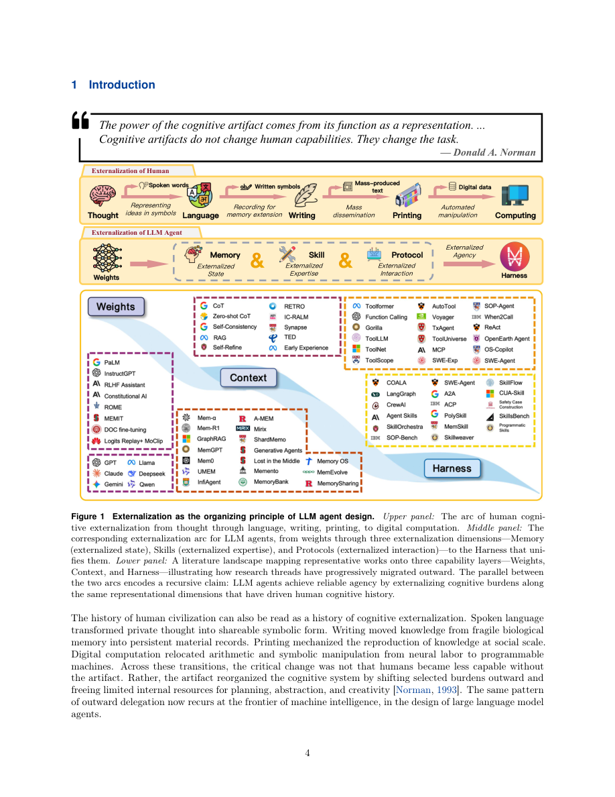

#1
★ 7/10
Externalization in LLM Agents: A Unified Review of Memory, Skills, Protocols and Harness Engineering
LLM智能体中的外化机制：记忆、技能、协议与执行框架的统一综述

图 Figure · Page 4 of paper
🎯 以"外化"视角统一解析LLM智能体的记忆、技能、协议与执行框架
A unified framework explaining LLM agent progress through "externalization" of cognition into memory, skills, protocols, and harness engineering.
| 维度 | 中文 | English |
|---|---|---|
| ❓ 待解决 的问题 |
现代LLM智能体的能力提升越来越依赖于对模型运行环境的重组，而非重新训练模型权重。然而，目前缺乏一个统一的理论框架来解释这种转变的内在逻辑，以及记忆、技能、协议、执行框架之间的关系。这导致智能体系统的构建和评估仍然缺乏系统性。 | Modern LLM agents are becoming increasingly capable not by retraining model weights, but by restructuring the environment around the model. However, there is no unified theoretical framework to explain why this shift works and how its components — memory, skills, protocols, and execution harnesses — relate to each other. Without such a framework, building and evaluating agent systems remains ad hoc and fragmented. |
| 💡 解决 的亮点 |
• 借鉴认知科学中"认知工件"概念，首次将"外化"作为统一视角，将智能体基础设施重新定义为将认知负担从模型转移到外部结构的过程。 • 提出清晰分类体系：记忆外化跨时间状态、技能外化程序性专业知识、协议外化交互结构、执行框架作为协调与治理层。 • 梳理了从权重→上下文→执行框架的历史演进路径，并展望了自演化执行框架和共享智能体基础设施等前沿方向。 | • Introduces "externalization" as a unifying lens borrowed from cognitive science (cognitive artifacts), reframing agent infrastructure as offloading cognitive burdens from the model to external structures. • Proposes a clear taxonomy: memory externalizes state over time, skills externalize procedural expertise, protocols externalize interaction structure, and the harness acts as the coordination and governance layer. • Traces a historical progression from weights → context → harness, offering a principled narrative of how agent design has evolved and where it is heading (self-evolving harnesses, shared infrastructure). |
| 🧪 实验 内容 |
本文是一篇综述与理论框架类论文，不含原创实证实验。作者通过系统性文献梳理，覆盖记忆机制（情节式、语义式、程序式）、技能获取与复用、多智能体及工具交互协议、执行框架工程实践等方向，并通过分析已有工作中的案例和已发布结果来支撑所提框架。 | As a survey and conceptual framework paper, this work does not conduct original empirical experiments. Instead, the authors perform a systematic review of existing literature on LLM agent systems, organizing findings across memory mechanisms (episodic, semantic, procedural), skill acquisition and reuse, multi-agent and tool interaction protocols, and harness engineering practices. They analyze case studies and published results from prior works to substantiate their framework. |
| 📊 实验 结果 |
作为综述论文，本文不报告新的基准测试数字或实验结果。其贡献为概念性的：将数十篇LLM智能体相关论文（涵盖MemGPT、Voyager、ReAct、AutoGen、LangChain等系统）的研究发现整合进统一的外化框架，识别出文献中的规律与空白，而非提出新的性能指标。 | As a survey paper, this work does not report new benchmark numbers or experimental results of its own. Its contributions are conceptual: it organizes and synthesizes findings from dozens of prior LLM agent papers into a coherent externalization framework, covering systems such as MemGPT, Voyager, ReAct, AutoGen, LangChain, and others, identifying patterns and gaps across the literature rather than reporting novel performance metrics. |
| 🏁 结论 | 本文以"外化"为核心，建立了一套有认知科学根基的LLM智能体理解与设计框架，论证了智能体的实际进步不仅依赖于更强的模型权重，更依赖于更优秀的外部认知基础设施工程。该框架为记忆、技能、协议与执行框架工程提供了统一的术语体系和系统级视角。 | This paper establishes "externalization" as a principled, cognitively-grounded framework for understanding and designing LLM agent systems, demonstrating that practical agent progress depends not only on stronger model weights but on better-engineered external cognitive infrastructure. It offers the field a unified vocabulary and systems-level perspective for memory, skills, protocols, and harness engineering. |
| 🔗 论文 链接 |
arXiv: 2604.08224v1 · 📥 PDF | |
⚙️ Method · 方法详解
本文采用文献综述与概念框架构建相结合的研究方法。作者借鉴认知科学中"认知工件"理论，论证LLM智能体的每个主要组件都在外化特定类型的认知负担：记忆存储负责状态持久化，技能库编码可复用的程序性知识，交互协议结构化多智能体与工具间的通信，执行框架则作为统一的治理协调层。作者系统分析了四类组件的相互作用、与参数化（模型权重内）能力的权衡关系，以及它们如何共同构成实际智能体部署的系统级架构。
The paper adopts a literature review and conceptual framework methodology. Drawing from cognitive science's notion of "cognitive artifacts" — tools that extend human cognition — the authors argue that each major component of an LLM agent externalizes a specific type of cognitive burden. Memory stores handle state persistence, skill libraries encode reusable procedures, interaction protocols structure multi-agent and tool communication, and harness engineering serves as the unifying governance layer. The authors systematically analyze how these four components interact, trade off against parametric (in-weights) capabilities, and collectively form a systems-level architecture for practical agent deployment.
🌟 Why It Matters · 为什么重要
随着LLM智能体成为AI实际应用的主流范式，研究者和工程师需要有原则性的框架来设计、评估和治理这些系统，本文正好填补了这一概念空白。通过将智能体基础设施根植于认知科学，本文架起了AI系统研究与认知理论之间的桥梁，有望为下一代自演化和共享智能体基础设施的发展提供指引。
As LLM agents become the dominant paradigm for deploying AI in real-world tasks, researchers and engineers need principled frameworks to design, evaluate, and govern these systems — this paper fills that conceptual gap. By grounding agent infrastructure in cognitive science, it bridges AI systems research and cognitive theory, potentially guiding the next generation of self-evolving and shared agent infrastructure.